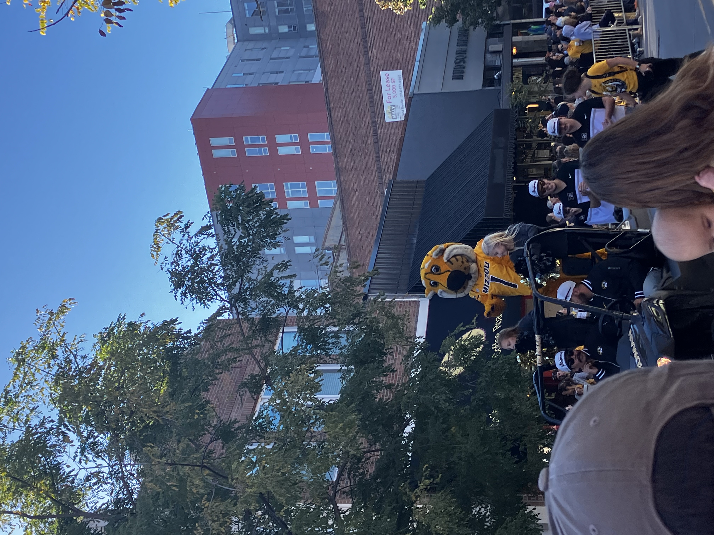
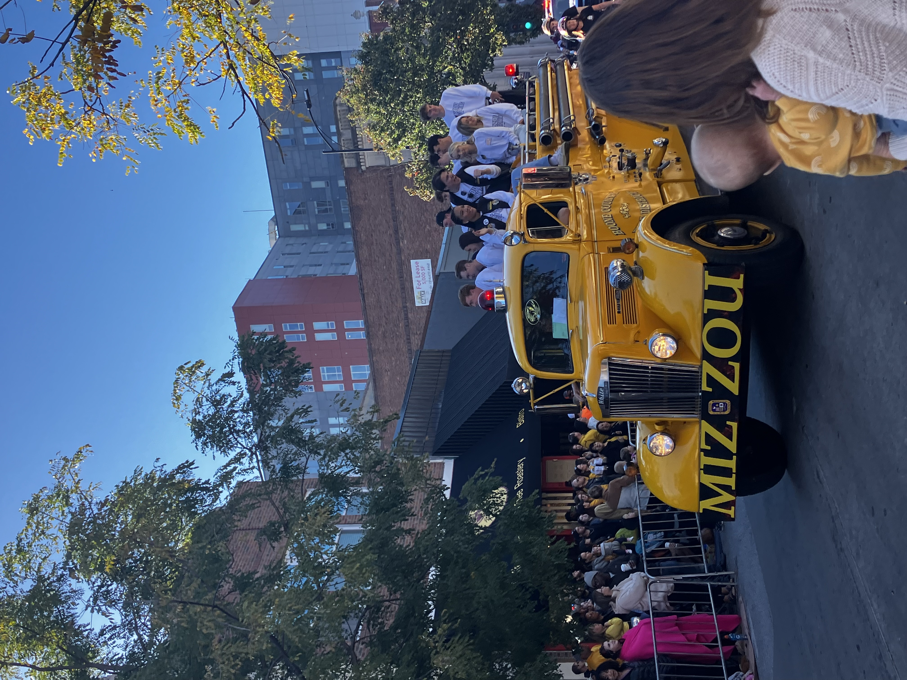
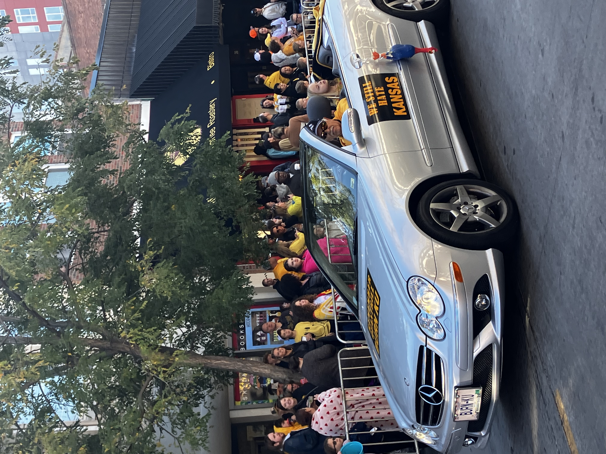
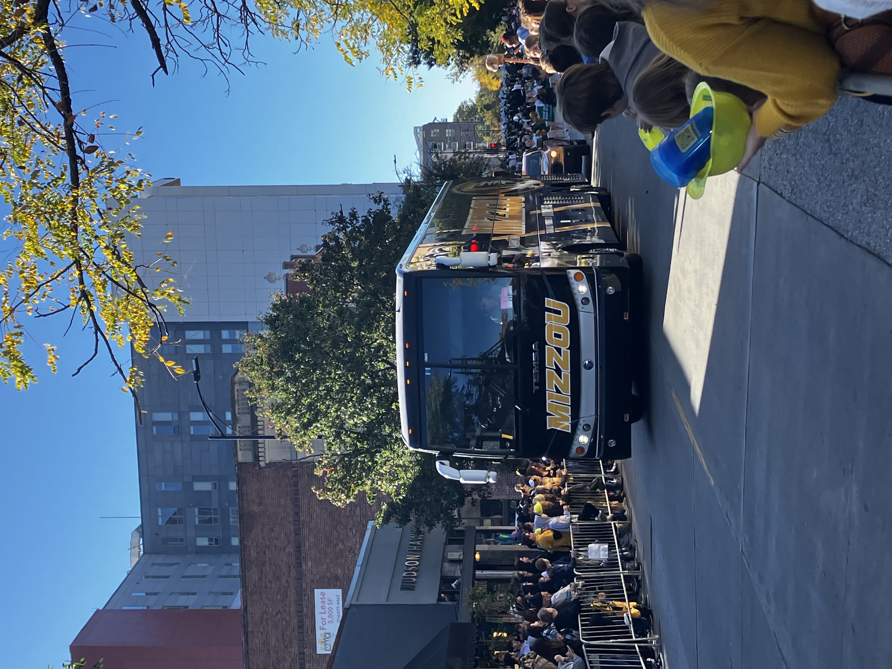
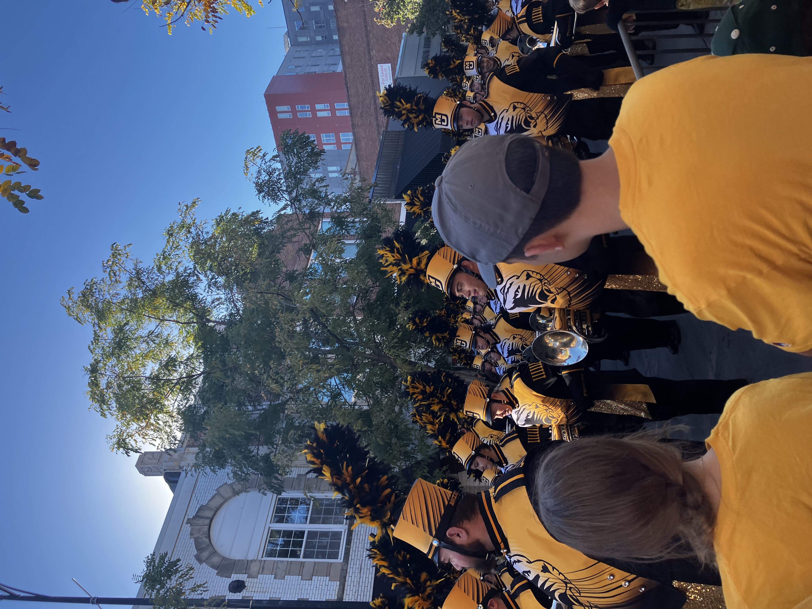
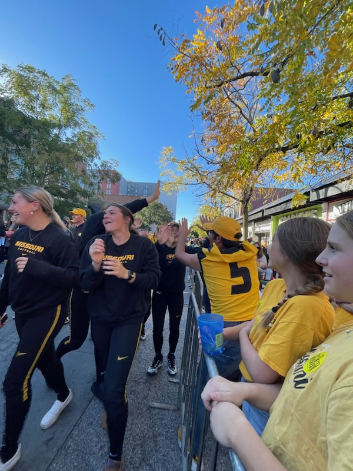
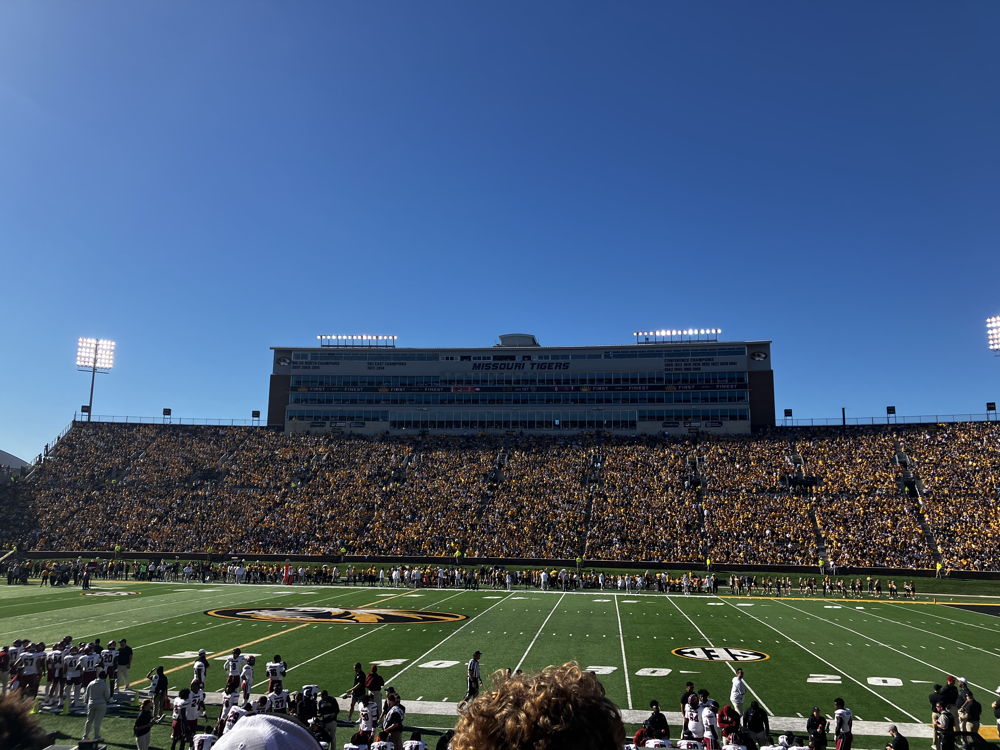
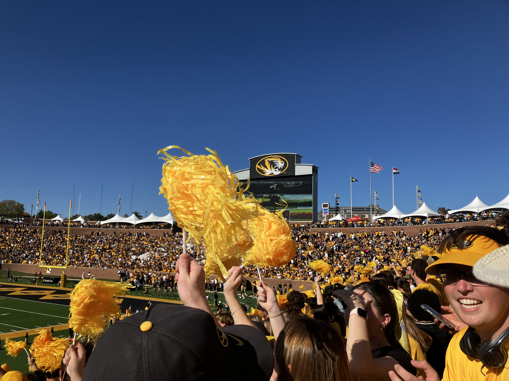

Homecoming at the University of Missouri is a tradition like no other. Mizzou was the first school to have a "homecoming", when Coach Chester Brewer invited almuni to "come home" for a football game against hated rival kU in 1911. This tradition has carried on for over on hundred year, but looks very different today.
Today, Mizzou's Homecoming is a week longg tradition as buisness downtown are painted, a 5k is hosted, talents shows in Greek town, a homecoming court, and much more. But the week of celebration though is concluded on a college football Saturday, with a parade through campus and dowtown Columbia in the morning and capped off by Mizzou's home football game later in the day.

The parade kicked off as the Truman squad lead the way, getting the crowd excited for the rest of the festivites

The Mizzou Fire truck is the next float. With its sirens blaring and lit up this vehicle is a mainstay of Mizzou Football gamedays

A old Mizzou fan in his convertable shows how much he and Mizzou still don't like kU. Mizzou and kU have not played eachother in football in over ten years.

The Mizzou Bus driving down the road. The bus is used to transport equipment and Mizzou atheletes at away sites.

Marching Mizzou play their instruments as they walk through the parade, getting the crowd excited to see Mizzou's athletes later in the parade

The Mizzou Softball team, still in their practice gear, walk in the parade and give a fan a high five.

The west stands at Faurot Field before kickoff at the Mizzou-South Carolina football game.

The crowd gets loud on a early key play in the Mizzou-South Carolina football.